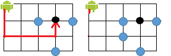

Trên một lưới ô vuông N hàng, M cột (1 ≤ N, M ≤ 20). Các dòng được đánh số từ 1 đến N theo thứ tự từ trên xuống dưới, các cột được đánh số từ 1 đến M theo thứ tự từ trái qua phải. Tại ô (1,1) người ta đặt một robot dò đường đi. Robot này có đặc điểm là chỉ có thể di chuyển theo 2 hướng: đi thẳng hoặc rẽ trái, mỗi lần đi một ô. Trên lưới ô vuông có một vài vị trí có vật cản mà robot không được đi vào những vị trí này.

(vật cản là những điểm màu xanh)
Cho vị trí (yd, xd) của một ô đích cần di chuyển đến, bạn hãy cho biết đường đi để robot có thể đi đến đích theo cách đi như trên. Biết rằng trong lần di chuyển đầu tiên, từ ô (1,1) robot có thể di chuyển đến ô (2,1) hoặc (1, 2) đều được.
Dữ liệu nhập:
- Dòng thứ nhất là hai số nguyên N, M cách nhau một khoảng trắng (1 ≤ N, M ≤ 20)
- Trong N dòng tiếp theo, mỗi dòng gồm M số nguyên 0 hoặc 1 cách nhau một khoảng trắng. Các dòng này xác định tình trạng của lưới, số 0 nghĩa là ô lưới không có vật cản, số 1 là ô lưới có vật cản.
- Dòng thứ 3 là hai số yd, xd cách nhau một khoảng trắng (1 ≤ yd ≤ N, 1 ≤ xd ≤ M).
(Dữ liệu cho đảm bảo tại ô (1,1) và ô (yd, xd) không có vật cản, ô (yd, xd) khác với ô xuất phát)
Dữ liệu xuất:
Nếu tồn tại cách di chuyển:
- Dòng đầu tiên in ra số nguyên k là số lượng ô của đường đi. (bao gồm cả ô đầu tiên và ô đích)
- Trong k dòng tiếp theo, dòng thứ i in ra hai giá trị yi, xi là vị trí ô thứ i trong đường đi, hai số cách nhau một khoảng trắng.
(Nếu có nhiều đáp án, in ra đáp án bất kỳ. Giới hạn đường đi không được dài hơn 2.000 ô)
Nếu không tồn tại cách di chuyển: in ra 0.
Chú ý trong test 3, đường đi tự cắt tại ô (2,3)